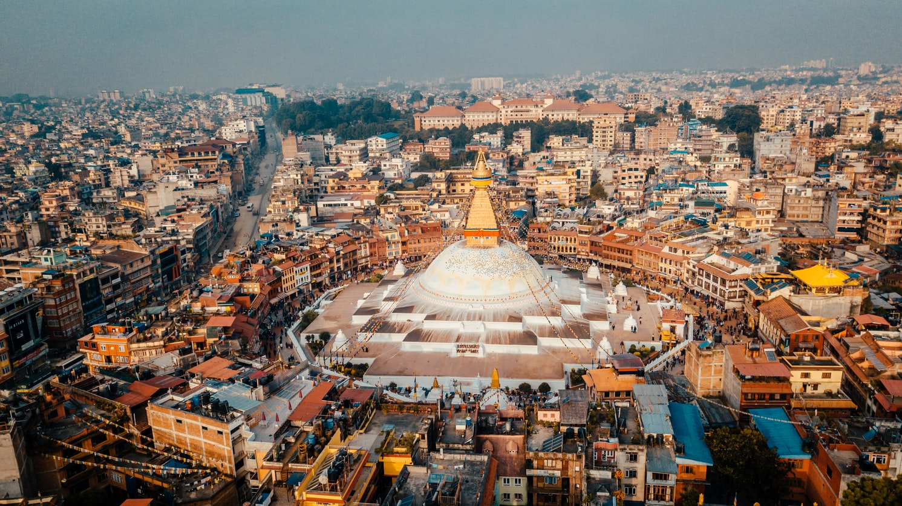
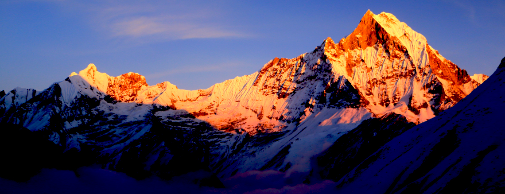
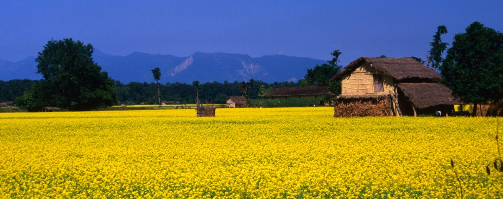
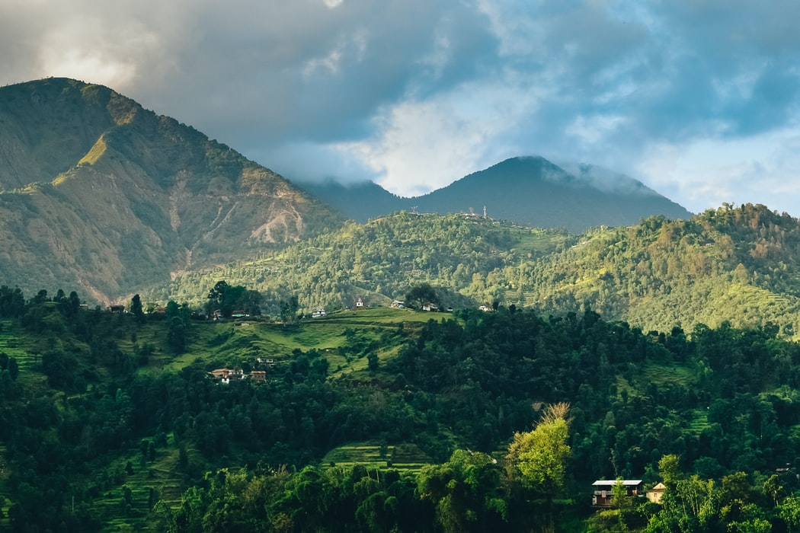
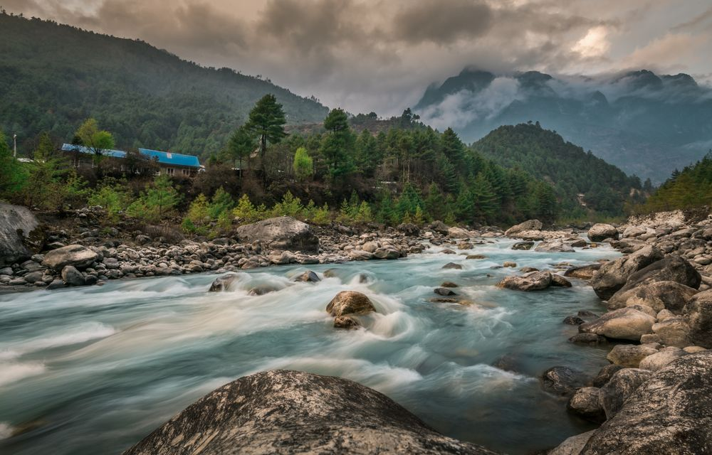

Contact me with


Heaven is a Myth.Nepal is real
Founded in a vast valley after draining a large lake, legends abound in this remarkable city and every street has a shrine or two. Kathmandu is an incredibly diverse, historic city with amazing architecture, exquisite wood carvings and metal craft which showcase the skills of the Newar artisans of centuries ago. Hinduism and Buddhism have co-existed in Kathmandu valley from time immemorial and the valley residents make little distinction as they worship in both Hindu and Buddhist shrines. Kathmandu is a city where ancient traditions are zealously guarded while at the same time embracing modern technology. The grandeur of the past enchants the visitor whose gaze may linger on an exquisitely carved wooden window frame, an 18th century bronze sculpture or a spiritually uplifting stupa. Kathmandu, the largest city of Nepal, is the political as well as cultural capital of the country, where Nepalis have arrived from all corners of the country and assimilated. Like any big city, Kathmandu has seen rapid expansion in the last decade, but despite the fast life of a metropolis, its people remain refreshingly friendly towards visitors. Retaining its ancient traditions, Kathmandu is blessed by the Living Goddess Kumari, a little Buddhist girl who represents the powerful Hindu Goddess Taleju. City life is enriched by endless ceremonial processions and events that take to the streets every now and then, with throngs of devotees seeking joy in spiritual celebrations. These religious festivals are steeped in legend and are quite a spectacle with chariot processions and masked dancers often possessed by the spirits of deities. The Durbar (palace) Square, a UNESCO World Heritage Site lies in the heart of the city with the old palace accompanied by a number of pagoda style temples that boast of superb craftsmanship in wood and metal. The Living Goddess’ residence lies nearby and the famous Freak Street is a stone’s throw away. Today tourists prefer Thamel which has grown into a thriving tourist quarter, offering everything from luxury to cheap hotels, generics cialis, bars and eateries to travel agencies, money exchange centres, massage parlours, night clubs, live music, yoga and meditation classes and more. International cuisine of every kind from Korean to Italian, Chinese, Japanese, Thai, Indian to Mexican and more are available within a square kilometre. Pashupatinath, Boudha and Swayambhu, three of the prominent religious pilgrimage sites are World Heritage Sites and a must see. These centuries-old places of worship, the countless smaller shrines and numerous festivals make Kathmandu a living museum, an opportunity to travel back in time while also enjoying all the trappings of the 21st Century.
The landlocked, mountainous nation borders the Indian states of Uttarakhand in the west, Uttar Pradesh in the south, Bihar in the southeast and West Bengal and Sikkim in the east. In the north, it shares a border with Xizang, the autonomous region of China known as Tibet. With an area of 147,181 km², Nepal is slightly larger than 1.5 times the size of Portugal or somewhat larger than the U.S. state of Arkansas. Nepal has a population of 30.3 million (2021). The largest city and the national capital is Kathmandu. The language spoken is Nepali; about half of the population speaks the official language Nepali, the rest use one of the more than 120 other Tibeto-Burman languages. The main religions are Hinduism (81%) and Buddhism (9%).
The country on the southern slopes of the Himalayas is home to eight of the world's ten highest peaks, including Mount Everest (8,848m; on the border between Nepal and Tibet), Lhotse (8,516 m; on the border between Tibet and Nepal), Makalu (8,463 m; on the border between Nepal and Tibet) and Kanchenjunga (8,586 m; on the border with Sikkim, India). Dhaulagiri, at 8,167 meters, is the highest mountain located within the borders of one country.
In complete topographic contrast to the Mountain and Hill regions, the Tarai Region is a lowland tropical and subtropical belt of flat, alluvial land stretching along the Nepal-India border, and paralleling the Hill Region. It is the northern extension of the Gangetic Plain in India, commencing at about 300 meters above sea level and rising to about 1,000 meters at the foot of the Siwalik Range. The Tarai includes several valleys (dun), such as the Surkhet and Dang valleys in western Nepal, and the Rapti Valley (Chitwan) in central Nepal. The word tarai, a term presumed to be derived from Persian, means "damp," and it appropriately describes the region's humid and hot climate. The region was formed and is fed by three major rivers: the Kosi, the Narayani (India's Gandak River), and the Karnali. A region that in the past contained malaria-infested, thick forests, commonly known as char kose jhari (dense forests approximately twelve kilometers wide), the Tarai was used as a defensive frontier by Nepalese rulers during the period of the British Raj (1858-1947) in India. In 1991 the Tarai served as the country's granary and land resettlement frontier; it became the most coveted internal destination for land-hungry hill peasants. In terms of both farm and forest lands, the Tarai was becoming Nepal's richest economic region. Overall, Tarai residents enjoyed a greater availability of agricultural land than did other Nepalese because of the area's generally flat terrain, which is drained and nourished by several rivers. Additionally, it has the largest commercially exploitable forests. In the early 1990s, however, the forests were being increasingly destroyed because of growing demands for timber and agricultural land.
Situated south of the Mountain Region, the Hill Region (called Pahar in Nepali) is mostly between 1,000 and 4,000 meters in altitude. It includes the Kathmandu Valley, the country's most fertile and urbanized area. Two major ranges of hills, commonly known as the Mahabharat Lekh and Siwalik Range (or Churia Range), occupy the region. In addition, there are several intermontane valleys. Despite its geographical isolation and limited economic potential, the region always has been the political and cultural center of Nepal, with decision-making power centralized in Kathmandu, the nation's capital. Because of immigration from Tibet and India, the hill ranges historically have been the most heavily populated area. Despite heavy out-migration, the Hill Region comprised the largest share of the total population in 1991. Although the higher elevations (above 2,500 meters) in the region were sparsely populated because of physiographic and climatic difficulties, the lower hills and valleys were densely settled. The hill landscape was both a natural and cultural mosaic, shaped by geological forces and human activity. The hills, sculpted by human hands into a massive complex of terraces, were extensively cultivated. Like the Mountain Region, the Hill Region was a food-deficit area in the early 1990s, although agriculture was the predominant economic activity supplemented by livestock raising, foraging, and seasonal migrating of laborers. The vast majority of the households living in the hills were land-hungry and owned largely pakho (hilly) land. The poor economic situation caused by lack of sufficient land was aggravated by the relatively short growing season, a phenomenon directly attributable to the climatic impact of the region's higher altitude. As a result, a hill farmer's ability to grow multiple crops was limited. The families were forced to adapt to the marginality, as well as the seasonality, of their environment, cultivating their land whenever they could and growing whatever would survive. Bishop has noted that "as crop productivity decreases with elevation, the importance of livestock in livelihood pursuits . . . increases. For many Bhotia [or Bhote] living in the highlands . . . animal husbandry supplants agriculture in importance." During the slack season, when the weather did not permit cropping, hill dwellers generally became seasonal migrants, who engaged in wage labor wherever they could find it to supplement their meager farm output. Dependence on nonagricultural activities was even more necessary in the mountain ecological belt.
Nepal may be economically poor but it is rich in natural resources. It abounds in snowcapped mountains with the world’s highest peak Mount Everest situated in Nepal itself, beautiful waterfalls, forests, green and lush vegetation. Nepal is the second-richest country in water resources after Brazil. Though Nepal is a land-locked country, it has many rivers and rivulets. The principal rivers of Nepal are Gandaki, Mechi, Koshi, Karnali and Mahakali.The rivers, which originate in the snowy mountains, are of great importance and have various advantages.The first advantage of river water is that it generates hydro-electricity. However, even today people in most villages of Nepal still use oil lamps or candles. We have to generate enough electricity for all Nepali people by using river water.The river water can also be used for irrigation purposes. Agriculture is the main occupation of Nepali people, so irrigation is of great significance. Nepalis mostly rely on rainfall for irrigation purposes, hence agricultural productivity is low. If we can use the rivers water for irrigation, we can increase our agricultural output.River water can be and is used for drinking purposes. It can be supplied to people in cities if the government can afford to invest money towards this end.Rivers are also a source of tourist attraction. Tourists are naturally attracted to the beauty of nature. We can offer entertainment facilities like swimming, rafting and bungee jumping and can earn foreign exchange.Living creatures can live for some days without food, but they cannot without water. Most of the rivers in Nepal, especially holy rivers like Bagmati and Bishnumati, are getting polluted day by day. We should be aware of this and it is our duty to conserve and preserve our rivers and water for future generations.
